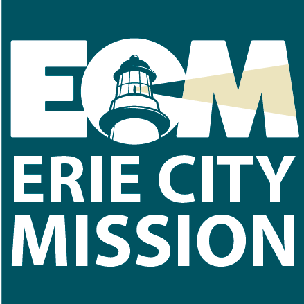
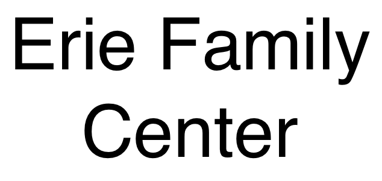
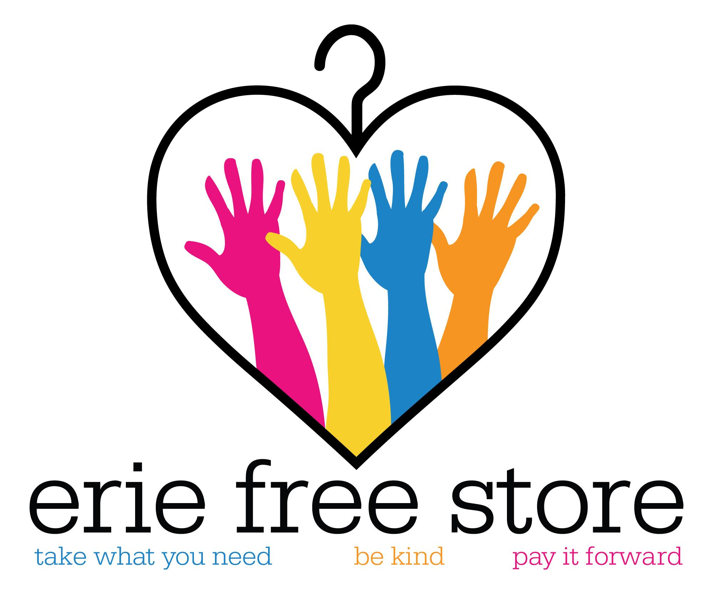
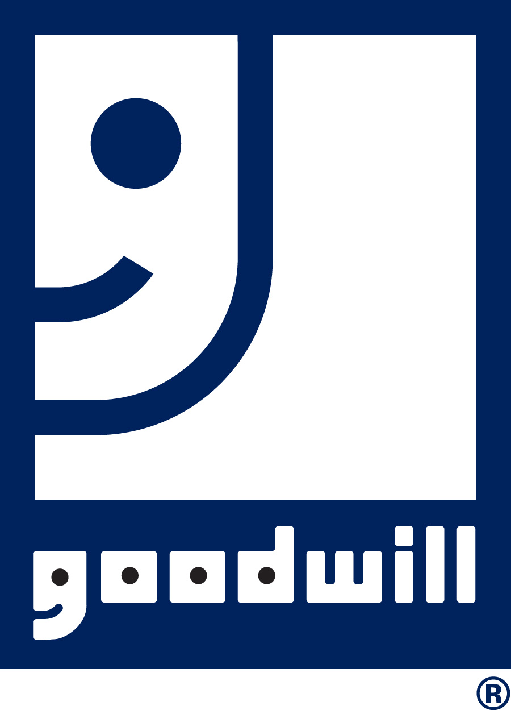
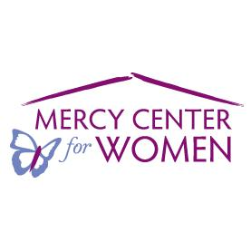
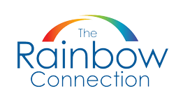
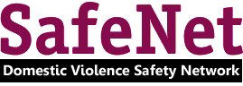
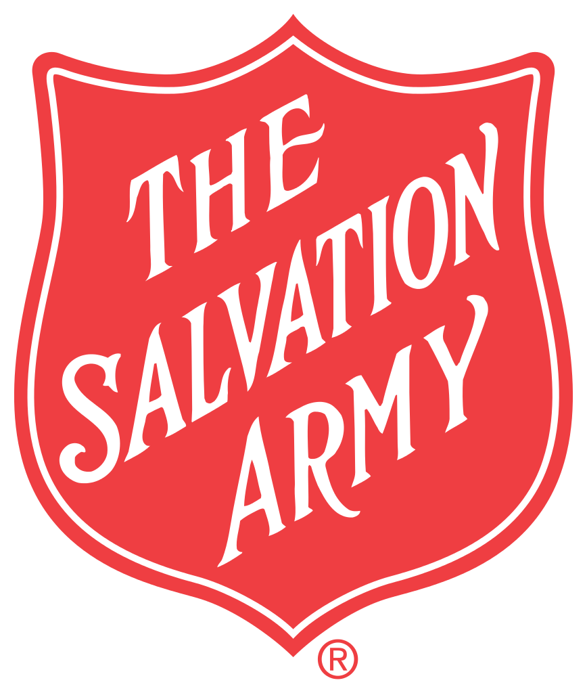
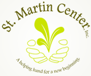

Accepted for donation:
Clothing:
Men's, women's, and children's clothing.
Household Items:
Small household goods such as dishes, pots and pans, small appliances, towels, sheets, curtains, and toys. Essentially things that you would need to start up in an apartment.
NO furniture and No large appliances.
Location:
254 East 10th StreetErie, PA 16503
Phone: 814-456-6254
Go to the website
Accepted for donation:
Clothing:
Gently used clothing for men, women, and children.
Household Items:
Essentially accepts items that one would need in setting up an apartment. Average size furniture such as couches, chairs, tables, dressers, housewares such as dishes, and pots and pans.
No knick knacks.
Call 814-456-2091 to schedule pickup for furniture
Location:
329 West 10th StreetErie, PA 16502
Phone: 814-456-2091
Go to the website
Accepted for donation:
Food:
Non-perishable food
Clothing:
Gently used clothing and men's boots and shoes
Household Items:
Twin bed sheets/blankets/linens, furniture (with the exception of beds), small household appliances/items, toiletries, cleaning supplies, and laundry detergent
*Agency can arrange to pick up larger items
Location:
655 West 16th StreetErie, PA 16502
Phone: 814-455-4369
Go to the website

Accepted for donation:
Clothing:
Gently used, nearly-new professional women's clothing including: interview appropriate suits and blouses, professional separates including blouses, slacks, skirts, dresses, blazers and jackets, new or gently used scrubs, work appropriate dress shoes, flats and heels, safety non-skid shoes and sneakers, handbags, briefcases, and portfolios. No formal wear.
Location:
1051 East 28th St.Erie, PA 16504
Phone: 814-456-0733
Please call to arrange donation before drop-off
Hours: M-F 8:00am-4:00pm
Go to the website

Accepted for donation:
Clothing:
Gently used clothing
Household Items:
Furniture and small household items.
Will pick up larger items. Schedule for a pickup.
Location:
2064 West 16th StreetErie, PA 16505
Phone: 814-452-4421
Go to the website

Accepted for donation:
Clothing:
Winter hats, gloves, coats and boots for children, new shoes for school aged children.
Household Items:
New baby supplies such as diapers, wipes, bottles, toys, cleaning supplies to give to families, etc.
Location:
913 Payne AveErie, PA 16503
Phone: 814-874-6990

Accepted for donation:
Clothing:
Men's, women's, and children's clothing.
Household Items:
Small household goods such as dishes, pots and pans, small appliances, towels, sheets, curtains, and toys--essentially things that you would need to start up in an apartment. NO furniture and NO large appliances.
Location:
2816 Elmwood AvenueErie, PA 16508
Phone: 814-864-4809
Visit the Facebook Page

Accepted for donation:
Clothing:
Clothing, shoes, and wedding gowns.
Household Items:
Housewares such as dishes, pots and pans, etc., small appliances, upholstered furniture with no rips, tears or stains, and bed linens, comforters.
Miscellaneous:
Books and purses.
Do NOT accept TV's or large appliances.
Location:
2601 West 26th StreetErie, PA 16506
814-833-4501
and
Summit Towne Center
7200 Peach Street, Unit #500
Erie, PA 16509
814-866-4762
Go to the website

Accepted for donation:
Clothing:
Clean, gently used, and seasonally appropriate women's clothing and shoes, children's clothing and shoes.
Household Items:
Household items such as dishes and pots and pans.
Location:
1039 East 27th StreetErie, PA 16504
Phone: 814-455-4577
Go to the website

Accepted for donation:
Clothing:
Clothing, school uniforms, and shoes/boots.
Household Items:
Housewares and blankets.
Miscellaneous:
Seasonal items and books.
Most good quality items.
Location:
1516 Buffalo RoadErie, PA 16510-1002
Phone: 814-453-4080
Go to the website

Accepted for donation:
Clothing:
New school uniforms, sleepwear and sweat suits.
Household Items:
Furniture in good condition, especially dressers with drawers, single beds, single mattresses, single sheets, pillows, towel sets, tables and chairs, household items, kitchen cookware and utensils, sets of dishes and glasses, ketchen towels, bookcases, new toiletry and baby supplies, diapers, formula, and baby furniture.
Miscellaneous:
New toys, books, art supplies, gently used Little Tikes toys, used and broken cell phones.
Location:
1702 French StreetErie, PA 16501
Phone: 814-455-1774 ext. 227
Call Project Connect to schedule a pick-up of all donated items.
Fax: 814-314-1506
Go to the website

Accepted for donation:
Clothing:
Women's, men's, and children's clothing, and men's suits.
Household Items:
Appliances in working order, furniture, household goods, and sofas.
Miscellaneous:
Working computer systems, books, and toys.
Location:
Three Locations:
1209 Sassafras Street
Erie, PA 16502
814-456-4237
1944 Keystone Drive
Erie, PA 16509
814-866-1787
1022 Liberty Street
Erie, PA 16502
814-454-6497
Go to the website

Accepted for donation:
Clothing:
New or gently used men's, women's, and children's clothing, belts, wallets, and shoes.
Location:
1701 Parade StreetErie, PA 16503
Phone: 814-452-6113
Go to the website
Accepted for donation:
Clothing:
Gently used men's, women's, and children's clothing including: t-shirts, underwear, socks, shoes, belts, coats, hats, mittens and gloves.
Miscellaneous:
Gently used boardgames.
Location:
1024 Peach StreetErie, PA 16501
Phone: 814-459-6315 or 814-459-6316
Go to the website